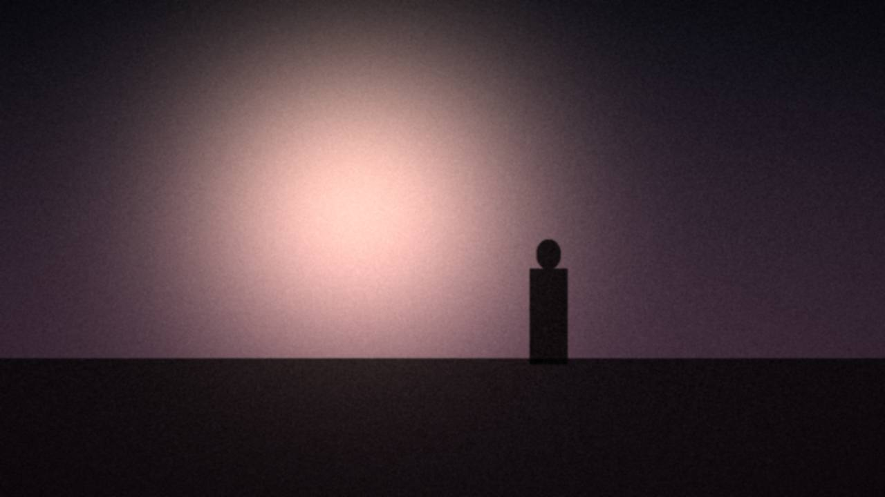

Nicolás RoyoDirector de fotografía
Entre los días, 2025
Ficción
Videoclips
Moda

Videomagazine
Showreel

Ver el showreelContacto
Disponible para cortometrajes, largometrajes, publicidad y videoclips.
Entre los días, 2025

Ver el showreelDisponible para cortometrajes, largometrajes, publicidad y videoclips.